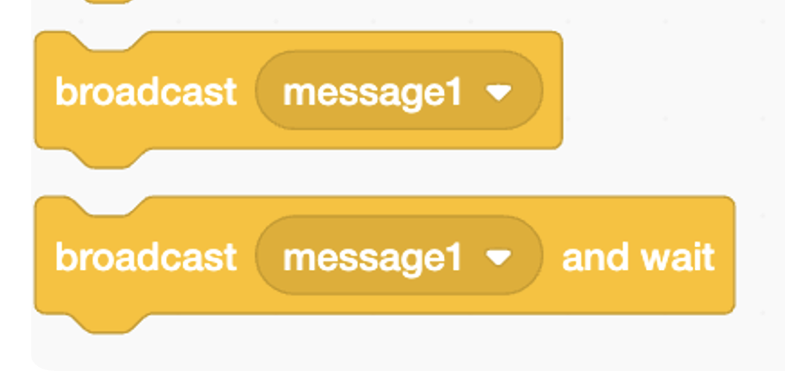
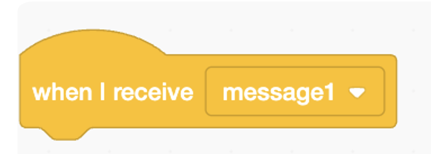
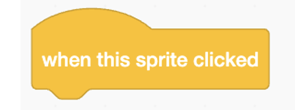
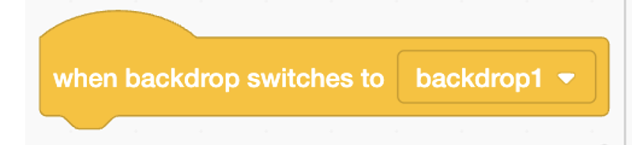
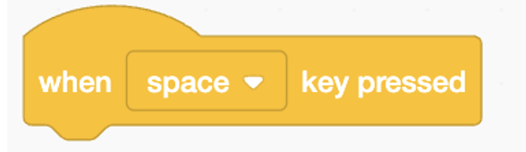

Scratch 1 Class - Guided Exercise
Lesson 8 Guide - Events and Broadcasting
Vocabulary:
- Broadcasting: Broadcasting in Scratch is like shouting out a message that other sprites can hear. When a broadcast is sent, any sprite that is set to listen for that message will immediately respond. Imagine a teacher clapping to get the attention of the whole class—that’s what broadcasting does in Scratch.
- Event: An event is something that happens in your program that triggers a specific block of code. It's like ringing a doorbell, which signals someone to come to the door. In Scratch, events trigger code to run.
Blocks Used/Introduced Today:
-

When Green Flag Clicked: This block starts the code when you click the green flag. It's like pressing "play" on a remote control to start your favorite show.
-

Broadcast [message]: This block sends out a broadcast message. Think of it as sending an announcement over the school's PA system, which all classrooms can hear.
-

When I Receive [message]: This block waits until a specific broadcast message is received, and then it runs the code attached to it. Imagine it like listening for your name to be called, and when you hear it, you raise your hand.
-

When This Sprite Clicked: This block triggers the code when the sprite is clicked. It's like pressing a button to make something happen.
-

When Backdrop Switches to [backdrop]: This block runs the code when the backdrop changes. It’s like changing the scene in a play, where new actions start based on the new setting.
-

When Space Key Pressed: This block runs the code when the key you select is pressed.
Exercise 1: Understanding and Implementing Broadcasting
Broadcasting in Scratch can be thought of as sending out a message that any sprite or part of the project can respond to. It’s like sending an announcement over a loudspeaker that everyone in the room can hear and react to.
For example, think about a game where you have multiple characters that need to react when something specific happens, like when a player wins. You’d use broadcasting to send out a message, such as "Player Wins," and every sprite that needs to react to this will do so once they receive that message.
Coding Scenario:
Step 1: Create two sprites: one will act as the "button" (you can name it "Start Button"), and the other will be the sprite that reacts to the broadcast (you can name it "Character"). Add a backdrop to make your game look visually appealing.
Step 2: Program the "Start Button" sprite:
Go to the "Events" tab and drag the "When this sprite clicked" block into the script area. Under the "Control" tab, drag the "broadcast [message1]" block into the script. Rename "message1" to "Start Game".
Now, whenever the player clicks on the button, it will broadcast the message "Start Game".
Step 3: Program the "Character" sprite:
Go to the "Events" tab and drag the "When I receive [Start Game]" block into the script area. Under the "Looks" tab, drag the "say [Hello!] for [2] seconds" block and connect it to the "When I receive [Start Game]" block.
Now, whenever the character receives the "Start Game" broadcast, it will say "Hello!" for 2 seconds.
Step 4: Test the Game:
Click on the "Start Button" sprite in the game to see if the broadcast works correctly. The character should say "Hello!" once the button is clicked.
Exercise 2: Understanding Event Blocks
In Scratch, event blocks are like the triggers that start different parts of your program. You can think of them as conditions that have to be met for something to happen, just like the conditionals you've learned about before. But instead of using a block that checks a condition, like "if touching color," events automatically check for things like key presses, clicks, or broadcasts, and then execute the code attached to them.
Example Event Blocks and Their Functions:
When green flag clicked: This block starts the program when the green flag is clicked. It’s similar to a conditional "if the green flag is clicked, then start the program."
When [space] key pressed: This block starts a script when a specific key is pressed. It’s like saying, "if the space key is pressed, then execute the following actions."
When this sprite clicked: This block starts the script when the specific sprite is clicked. Similar to "if this sprite is clicked, then perform these actions."
When backdrop switches to [backdrop1]: This block triggers a script when the backdrop switches to a specific one, like "if the backdrop changes to 'night', then start the nighttime events."
Coding Scenario:
Objective: Create a program where different actions are triggered by different event blocks.
Step 1: Create a sprite and a backdrop in Scratch.
Step 2: Use the "When green flag clicked" block to start an introductory animation. For example, the sprite could say, "Welcome to my game!" for 2 seconds.
Step 3: Use the "When [space] key pressed" block to make the sprite jump. You can use a motion block like "change y by 10" to simulate a jump.
Step 4: Use the "When this sprite clicked" block to change the sprite's costume. For example, switch to a different costume that looks like the sprite is waving.
Step 5: Use the "When backdrop switches to [backdrop1]" block to start a nighttime sequence. Change the sprite’s color or appearance to look like it’s night, or play a sound effect.
Step 6: Test the program to make sure each event works as expected.
Homework and Practice Exercises:
-
Exercise 1: Create an Interactive Story
- Use broadcasting to switch between scenes in your story. Create at least three different scenes, and use the "When I Receive [message]" block to trigger actions in each scene.
-
Exercise 2: Reaction Game
- Create a reaction game using the "When Timer Expires" block. The game should wait for a random amount of time before prompting the player to click a sprite. Use the timer to measure how fast the player reacts.
-
Exercise 3: Complex Interactions
- Combine different event blocks to create complex interactions between sprites. For example, make one sprite move when another sprite is clicked, or change the backdrop after a certain time.
-
Challenge: Simon Says Game
- Create a "Simon Says" style game where the player has to follow the instructions given by a sprite. Use broadcasting to communicate between sprites and event blocks to trigger the next step based on the player's actions.